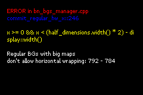

Frequently asked questions (FAQ)
Contents
- General
-
Programming
- Is there any good free IDE for Butano projects out there?
- Why I get an incomplete type error when trying to use a Butano class?
- Why there's std like containers included with Butano?
- So I shouldn't use the heap?
- Why I run out of memory so often?
- How to destroy sprites and backgrounds?
- That's cool, but how can I destroy and reload sprites and backgrounds as easy as possible?
- Does Butano allow to declare bn::sprite_ptr or bn::regular_bg_ptr objects globally?
- Are there some more general notes on GBA programming out there?
- Colors
- Backgrounds
- Audio
General
How do I-
The best way to get started is to read the guide to download, install and start using Butano.
After that, there are various examples explaining most aspects of the engine.
At last, check how to import your own assets in a game and take a look at the modules page.
This page is worth a look too.
Would I be able to sell my game made with Butano for money?
Sure!
If you comply with Butano license and third party libraries licenses used by Butano you can sell your game without issues.
Programming
Is there any good free IDE for Butano projects out there?
Take a look at the Qt Creator setup guide.
Why I get an incomplete type error when trying to use a Butano class?
If you have an error like these:
error: variable 'bn::regular_bg_ptr bg' has initializer but incomplete type error: invalid use of incomplete type 'class bn::regular_bg_ptr'
It is almost always because of lack of included headers.
You can find the header of each Butano class in its documentation page.
Why there's std like containers included with Butano?
Butano containers differ from the standard library ones in two important points:
- They don't use the heap, their content is always on the stack.
- They don't throw exceptions. Asserts are used instead.
Since avoiding heap usage and exceptions is usually good for GBA development, use Butano containers whenever possible.
So I shouldn't use the heap?
Since heap usage is slow and the heap allocator included with Butano is very limited, avoid heap usage whenever possible.
Why I run out of memory so often?
Besides VRAM and such, the GBA provides two memory banks:
- IWRAM: 32KB fast RAM.
- EWRAM: 256KB slow RAM.
Data is allocated in IWRAM by default, so it is common to run out of memory if you don't use EWRAM.
To place data in EWRAM, you can:
- Allocate memory in the heap, since it is in EWRAM.
- Declare static data with the
BN_DATA_EWRAMmacro:BN_DATA_EWRAM static_data data;
However, if the data is read only, you can avoid wasting RAM by placing it in ROM with the const qualifier: const const_data data;
How to destroy sprites and backgrounds?
bn::_ptr suffix are std::shared_ptr like smart pointers that retains shared ownership of a hardware resource.
In the case of bn::
If you want to learn more about std::shared_ptr, you can read:
That's cool, but how can I destroy and reload sprites and backgrounds as easy as possible?
bn::
// bg_optional is empty: bn::optional<bn::regular_bg_ptr> bg_optional; // bg_optional now contains the background specified by bn::regular_bg_items::bg1: bg_optional = bn::regular_bg_items::bg1.create_bg(0, 0); // bg_optional is empty again: bg_optional.reset(); // bg_optional now contains the background specified by bn::regular_bg_items::bg2: bg_optional = bn::regular_bg_items::bg2.create_bg(0, 0);
Does Butano allow to declare bn::sprite_ptr or bn::regular_bg_ptr objects globally?
In general, you should not do anything with Butano before calling bn::
If you want to declare global Butano objects, you can do something like this instead:
struct global_data { bn::sprite_ptr sprite; bn::regular_bg_ptr bg; }; global_data* global_ptr; int main() { bn::core::init(); global_data global_instance = { bn::sprite_items::sprite_item.create_sprite(0, 0), bn::regular_bg_items::bg_item.create_bg(0, 0) }; global_ptr = &global_instance; // ... }
And then you can access global Butano objects from anywhere in your code with something like this:
global_ptr->sprite.set_position(50, 50);
Are there some more general notes on GBA programming out there?
Colors
Which color is the transparent one?
Butano supports 16 or 256 color images only, so they must have a color palette.
The transparent color is the first one in the color palette, so in order to change it you should use a bitmap editor with color palette manipulation tools, like Usenti:

Backgrounds
Why some backgrounds don't allow wrapping?
If you try to move a big background beyond its boundaries, an error like this one should be displayed:
That's because big backgrounds don't allow wrapping, so if you are using a big background, avoid moving it beyond its boundaries (or avoid using big backgrounds).
What's a big background?
The GBA only supports some fixed sizes for background maps.
However, Butano allows to manage background maps with any size multiple of 256 pixels. These special background maps and the backgrounds that display them are called big maps/backgrounds.
Try to avoid big backgrounds whenever possible, because they are slower CPU wise and don't support wrapping (they can't be moved beyond their boundaries).
Why there are two types of backgrounds (regular and affine)?
It seems it is always better to use affine backgrounds, since they can be rotated, scaled, etc. and its size can be up to 1024x1024 pixels without becoming big backgrounds.
However, compared to regular backgrounds, affine backgrounds have these limitations:
- Only two of them can be displayed at the same time, instead of four.
- They don't support 16 color tiles, only 256 color ones.
- They only support up to 256 different tiles, instead of 1024.
Because of these limitations, you should avoid affine backgrounds whenever possible.
Audio
Why the game crashes when a song is played?
Butano uses the excellent Maxmod library for audio support.
It provides impressive performance and support for lots of module music formats, but unfortunately it crashes with some songs.
You could try to create a new issue in its GitHub issues page, but since it seems the library was abandoned long time ago, don't hold your hopes up too much.
How can I improve audio quality?
If you have some free CPU left, you can increase audio mixing rate to improve its quality.
The easiest way to specify the audio mixing rate for a specific project is to define it in the USERFLAGS of its Makefile.
For example, to set the audio mixing rate to 21KHz:
USERFLAGS := -DBN_CFG_AUDIO_MIXING_RATE=BN_AUDIO_MIXING_RATE_21_KHZ
Remember to rebuild your project from scratch after modifying a Makefile.
Available mixing rates are here.